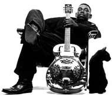

Впервые напечатано в журнале MUSICBOX
A.В.Евдокимов
О, НОВЫЙ СЧАСТЛИВЧИК
На сцене его представляют принцем блюза: великолепный певец, яркий гитарист, изысканный стилист в игре на акустическом рояле и в равной степени - на таком коварном инструменте как электроорган. Аранжировщик. Блестящий шоумэн, увлекающий в блюз любую аудиторию. Его зовут Лаки Питерсон, и имя его - незаслуженно малоизвестно в России. Пора исправить эту оплошность, что и делает сегодня MUSICBOX... Да, маленькая деталь: Lucky по-английски - Счастливчик.
Hi, there in Russia. This is the bluesland. You’re listening to Lucky Peterson.
- Сегодня и я могу считать себя счастливчиком - мне удалось встретиться с Вами...
И я счастлив встретиться с Вами. Вы так из далека - из России. Там слушают блюз? Я этому счастлив!
- Что мне кажется особенно интересно - вы придерживаетесь блюзовых традиций, не нарушаете правила. И в то же время Ваш блюз звучит абслютно современно - это сегодняшняя музыка...
Да-а. Это от молодости, от избытка энергии. И сейчас - год 1995й. Поэтому я стараюсь наполнить сегодняшний блюз сегоняшней энергией. Ведь когда блюз был молод, правила еще только создавались, - это была новая музыка того дня, очень энергичная по тогдашним меркам. Так что если я хочу, чтобы мой блюз слушали сегодня, я должен делать его современным по энергии, и не обязательно при этом менять правила, по которым блюз существует уже больше века.
- Вы очень популярны в качестве, если можно так выразиться, аккомпаниатора. С кем Вы только не записывались...
Это прежде всего было в удовольствие. Я играл с нынешними королями губной гармоники: Джеймс Каттон, Джуниор Уэллс (James Cotton, Junior Wells). С гитаристом Кенни Нилом (Kenny Neal) мы вместе записывали его дебютный альбом, когда у него даже не было контракта на выпуск пластинки, а потом эта запись вышла на фирме “Эллигейтор”(Alligator). Я действительно сам вряд ли сегодня вспомню все альбомы, в записи которых принимал участие. Я сказал, это было просто весело, мы отлично провели время в студии, но одновременно это был для меня и шанс учиться блюзу - играть вместе с теми, кого я обожал с детства.
- И была особая пластинка, помните, Вы “акомпонировали”Отису Рашу?
Да-да! Я получил огромное удовольствие!
- Было трудно работать с готовой записью? (Альбом фирмы “Эллигейтор” “Otis Rush. Lost In The Blues” 1991 года представляет собой концерт трио Отиса Раша в стокгольмской студии в 1977м, к которому четырнадцать лет спустя уже в чикагских студиях “Эллигейтор” Лаки Питерсон “добавил” партию фортепиано. В блюзе, где к любым студийным переналожениям относятся с некоторой брезгливостью, предпочитая живую ошибку в общей игре вылизанности исполнения раздельных партий, это было почти покушением на устои. Однако “Lost In Blues” слушается как единый ансамбль. Юный Лаки Питерсон “вписался” в группу ветерана блюза, как будто был там, в Стокгольме, в день концерта - ювилирная работа!)
Это нисколько не было трудно. Я лишь следовал своему внутреннему инстинкту: закрыл глаза и вообразил себя там, в студии. И все получилось.
- Что Вы скажете о своем новом альбоме “Lifetime” - “Вся жизнь”?
Это пластинка для того, чтобы дать понять: я буду играть блюз всю мою жизнь. Жизнь меняется день ото дня, и музыка меняется вместе с ней. Так что один альбом не может быть похож на другой. По сравнению с "Beyond Cool" ("Далек от спокойствия". 1993) это другое настроение... Хотя я по прежнему далек от спокойствия! Во мне нет равнодушия! И так будет “Всю жизнь”!
- Вы начали профессионально выступать очень рано. У вас ведь был особый шанс. Ваш отец - Джеймс Питерсон - был не только известным музыкантом, певцом-гитаристом, но и открыл собственный блюзовый клуб, где частыми гостями были и Мадди Уотерс, и Хаулин Вулф, и Уилли Диксон - это если назвать только самые громкие имена...
Да, мой отец - блюзмэн. И для меня блюз - эта и сама жизнь и все, что в жизни бывает. Вы понимаете, что блюз я слышал еще в колыбели. Первую пластинку - при помощи отца и его друга Уилли Диксона - я записывал, когда мне было пять лет. Тогда всеобщее увлечением органом Hammond B-3 еще не прошло, и, поскольку я играл на клавишных, в газетах меня называли “Блюзовым Моцартом”... Хотя сегодня я не уверен, что это был такой уж блюзовый альбом. Не стоит вспоминать его всерьез. Гораздо интереснее альбом, который был записан мной вместе с отцом - "The Father, The Son, The Blues" ("Отец, сын, блюз"). Его тоже продюссировал Уилли Диксон. Это был 74-й год. А потом в качестве вундеркинда я уже не мог интересовать продюссоров. И очень хорошо! Могу сказать, тут-то и настало время учебы. В отцовском клубе я акомпонировал приезжавшим на гастроли Коко Тейлор, Джимми Риду, Лайтнин Хопкинсу и Мадди Уотерсу (Кокo Taylor, Jimmy Reed, Lightnin’ Hopkins, Muddy Waters). Я отлично помню, как волновался, когда выпала возможность сыграть с великим Джимми Смитом (Jimmy Smith), который, фактически, и был моим заочным учителем в игре на Hammond B-3, я всегда стремилсся ему подражать. И это были люди очень открытые: никаких секретов! Я столькому научился от них, сколько никогда бы не узнал по книгам или пластинкам!
- В 18 лет Вы отправились в гастроли...
Я поехал в Европу как участник оркестра Литл Милтона (Little Milton). В Европе тогда гастролировали и Мэджик Слим, и Эндрю Одом (Magic Slim, Andrew Odom). Я пользовался случаем, переходил из группы в группу. В 1984 мне опять повезло - для французской фирмы я записал свой первый "взрослый" альбом.
-Вы и теперь живете в Европе?
Нет. В Атланте, штат Джорджиа.
- А Ваше сотрудничество с “Эллигейтор”? Вы сменили компанию?
Да, я больше не с "Аллигатором". Я теперь с "Полигрэмом".
- Надолго? Вы довольны их работой?
Да, я очень доволен...
- А можно уточнить?
Ну, больше рынок. Вы понимаете, у “Эллигейтора” свой рынок, но он не так велик, как у "Полигрэма".
- Все-таки “Эллигейтор” - чисто блюзовая фирма, а “Полигрэм”- международный всеядный гигант. Они как-то вмешиваются в Вашу работу? Например, напоминают, что пора записать очередную пластинку?
“Lifetime” - моя третья пластинка на “Полигрэме”. Никто мне о ней не напоминал, потому что в этом не было необходимости. Я и готовился к ней всю жизнь. И летом прошлого года почувствовал, что пора. Это произошло во время гастролей по Франции, я вернулся в отель после концерта, взял телефон, позвонил своему менеджеру и сказал, что время настало. Я с ним ведь давно уже говорил об этом проекте. Я сказал, что напишу большинство песен и запишу их со своим обычным гастрольным ансамблем. Я сказал, что альбом будет состоять из современных блюзовых песен - о моей жизни. Там будет и блюз как таковой, и фанк, и рок, и джаз, и госпел... Когда я закончил говорить, телефон молчал несколько секунд, а потом Чарлз (Charles Mitchell - личный менеджер Лаки Питерсона) сказал: "Лаки. Мужик! Это же как раз то, чем ты занят каждый вечер на концерте". Я был рад это услышать. Значит, я знал, на что замахнулся. Эту историю я потом описал для конверта пластинки - для меня это было очень важно. Я жил всю жизнь с прекрасной музыкой блюза. Я могу ее играть. Я чувствую себя свободным и на сцене, и когда покидаю ее.
- Вы много гастролируете. Где Вы побывали?
Мы были повсюду, назовите любое место - мы там были: Австралия, Япония, Нью-Йорк, Флорида, Италия, Израиль, Париж, Африка. Даккар - мы были всюду.
MONTREUX-95.

Джордж Кеннет (Лаки) Питерсон родился в 1963 году в Буффало, штат Нью-Йорк. Его отец, музыкант и певец Джеймс Питерсон, был тогда владельцем "Governor's Inn", загородного ночного блюзового клуба. Его семья жила в помещении самого клуба, и Лаки, можно сказать, вырос в блюзовом окружении. Играть он начал с трёх лет (на барабанах) и уже через два года записал свой первый сингл, продюсированный не кем-нибудь, а самим Вилли Диксоном. К отцу часто заезжали и его друзья — Бадди Гай, Джуниор Уэллс, Мадди Уотерс, Коко Тэйлор и другие. Младший Питерсон учился играть на фортепиано и гитаре, сидя на репетициях у отца, а затем и принимая участие в сессиях.Однажды он услышал исполнение Билли Доггета на "Хаммонд"-органе и сразу же полюбил этот инструмент. Билли дал ему несколько уроков, и Лаки стал играть на "Хаммонде" в оркестре отца. Слушатели, приходившие в клуб, не могли сразу поверить, что пятилетний ребёнок умеет так хорошо играть, большинство думало, что это механический орган. Впоследствии легендарный Джимми Смит, до тех пор известный Питерсону только по пластинкам, передал ему некоторые секреты своего мастерства.
Когда Лаки не было ещё и шести, его карьера получила неожиданный толчок — он смог участвовать в общенациональных телевизионных программах "The Ed Sullivan Show", "The Tonight Show", "David Frost Show". Эти выступления сделали имя молодого вундеркинда известным в стране и прибавили ему мастерства и уверенности в собственных силах.
В 1980 году вместе с семьёй он переехал во Флориду, где его ждала очередная удача. Известнейший блюзмен Литтл Милтон приехал дать пару концертов, но его группа застряла где-то по дороге. Он позвонил Джеймсу Питерсону и ангажировал ансамбль его сына. Они отыграли один концерт и сразу же после этого отправились все вместе в трёхлетнее (!) турне. Питерсон довольно быстро стал вторым солистом у Милтона. Концерты группы обычно начинались с его 45-минутного вокального и инструментального выступления. Впоследствии он ещё три года был одним из солистов в ритм-энд-блюзовой группе Bobby "Blue" Bland.
В перерывах между гастролями Лаки довелось ещё какое-то время поиграть с B.B.King, а также принять участие в европейской музыкальной программе "Молодые блюзовые мастера". Тогда же он записал свой первый сольный альбом, "Ridin'" на французской фирме "Isabel Records".
1988 год принёс ему возвращение во Флориду и продолжение серьёзной работы. На него обратила внимание издающая блюзовые пластинки фирма "Alligator", которая выпустила интересные (и разные) диски: "Lucky Strikes" и "Triple Play". На них присутствуют как классические вещи известных композиторов, так и написанные самим Питерсоном и сразу же получившие признание у слушателей композиции. В это же время он записывался вместе с Уинтоном Марсалисом, Эттой Джеймс, Джо Луисом Уолкером, Кенни Нилом, Эбби Линкольном и многими другими. Его манера становится всё более индивидуальной и узнаваемой, он соединяет в своих композициях мощь классического ритм-энд-блюза с элегантностью и стильностью фанк-музыки и современного джаза.
Приобретя уже поистине мировую известность, Лаки Питерсон начинает выходить на знаменитом лэйбле "Verve" и у него появляется в середине 90-х три компакт-диска: "I'm Ready", "Beyond Cool" и "Lifetime". (Недавно издан ещё один альбом, "Move"). Большинство критиков единодушно отмечают редкое сочетание подлинно блюзового духа его песен и современного молодёжного стиля исполнения, что приносит ему успех в различных по возрасту и вкусам аудиториях. Он постоянно экспериментирует, часто выступает с большой духовой секцией, превращая свою группу в некий блюз-биг-бэнд, и в то же время записывается и сочиняет музыку вместе с фанк-бас-гитаристом Бутси Коллинзом.
Наверное, рано подводить какие-то итоги музыкального пути Питерсона, но ясно одно: его неуёмная жажда творчества, стремление внести новое в классическую форму блюза, оставаясь верным его содержанию, дадут нам ещё возможность услышать много интересных и неожиданных записей в его исполнении.
Подготовил Евгений ДОЛГИХ
Перепечатано из журнала Jazz-квадрат